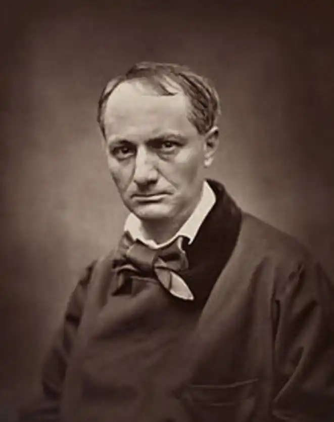
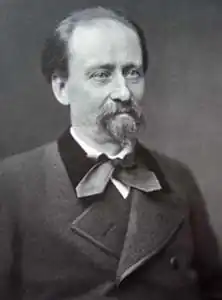
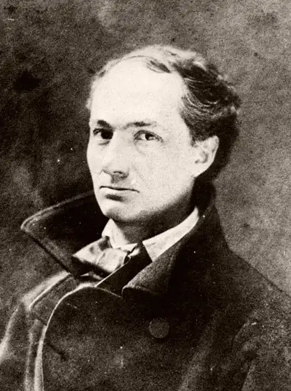

ШАРЛЬ БОДЛЕР
(1821 — 1867)
Шарль Бодлер народився в Парижі у квітні 1821 року. Батько поета походив із сільської родини у Шампані з войовничим прізвищем ("бодлер" — двосічний ніж), але йому вдалося вибитися в люди, отримати освіту й стати вихователем у шляхетній сім'ї. Він помер, коли Шарлю ледве виповнилося сім років, але встиг прищепити синові бездоганні манери, порядність, шанобливе ставлення до героїчних часів Франції та інтерес до живопису, який стане справжньою пристрастю Бодлера. Певне, батько був єдиним, хто щиро любив хлопчика. Після його смерті Шарль був приречений на нерозуміння і самотність навіть у колі близьких людей. Родинна драма болісно вплинула на душу хлопчика: смерть коханого батька, новий шлюб матері, її покірність вітчиму, який завзято намагався "привести до норми" надто різкий, своєрідний характер Шарля,— усе це зробило його вигнанцем у сім'ї і багато в чому визначило формування безрадісного і навіть трагічного світосприйняття. Навчався Бодлер у закритому колежі у Ліоні, потім у Парижі, а у 1841 році за наполяганням вітчима Бодлера відправляють служити у заокеанські колонії Франції. Тропічна природа і мандрівка океанами залишили глибокий слід у пам'яті юнака і неодноразово втілювалися в його поезіях ("Краєвид", "До дами-креолки", "Запрошення до подорожі"). Поет мріє "про сині небокраї, про мармури колон, де водограй ридає", "де в сонця пестощах пурпуристий сад, де затінь від дерев пливе благоуханна". У вірші "Екзотичний аромат" Бодлер згадує "лінивий острівець, де золоті дари природа подає в нев'янучім розмаю". Повернувшись до Парижа у 1842 році, Бодлер починає самостійне життя на спадок, що залишився по смерті батька. Він поринає у художній і літературний світ столиці. Вважаючи поезію своїм основним покликанням, Бодлер, однак, пише дуже мало, старанно працюючи над кожним рядком. Саме у цей період поет: інтенсивно студіює Літературу: захоплюється титанами доби Просвітництва і творами сучасників — Стендаля і Бальзака. Водночас Бодлер вивчає живопис. Саме в той час Бодлер зближується з молодими поетами і художниками романтично-бунтівного напряму — "покоління молодого, серйозного, іронічного й загрозливого", як характеризував його він сам. Ці юні бунтівники висміювали у своїх творах "господарів життя"— ситих і вдоволених буржуа, дріб'язкове та меркантильне буржуазне середовище, гостро відчували драматизм становища мистецтва й художника у буржуазному суспільстві, співчували приниженому й ображеному люду. У цьому середовищі сформувалася яскраво виражена антибуржуазність — одна з ґрунтовних рис світогляду й творчості Бодлера. Отож для нього було цілком природним узяти участь у Червневій революції 1848 року. Після 1848 року Бодлер поринув у гостру душевну кризу, яка затяглася майже на десятиліття і збіглася з кризою суспільною. У цей період поет занотовує у щоденнику: "У кожній людині є два одночасні прагнення, одне спрямоване до Бога, одне до Сатани. Поклик Бога, або духовність,— це прагнення внутрішнього піднесення, поклик Сатани, або тваринність це насолода від власного падіння". Настрої і роздуми поета відбилися в його віршах і публіцистиці. Саме у період, коли Бодлера полонили гіркі роздуми про протилежність прекрасного і реального, поета й суспільства, з'являються його статті про життя і творчість Едгара По, які проливають світло на трагічний конфлікт письменника з американською дійсністю ("Едгар По, його життя і твори", 1856). У віршах, написаних між 1852 і 1856 роками, поет доходить висновку, що зло панує у світі і що завдання мистецтва — перемагати зло. І наступний його Твір — збірка "Квіти зла", видана у 1857 році,— стає "динамітною бомбою, яка впала на буржуазне суспільство Другої імперії". Проти Бодлера, як за півроку до того проти Флобера, була порушена судова справа. Бодлера звинуватили у "грубому реалізмі, який ображає цнотливість". За опублікування "Квітів зла" автор був засуджений до сплати штрафу у розмірі 300: франків. Вирок передбачав також заборону і вилучення Зі збірки шести віршів, що фактично означало знищення непроданого накладу і загрожувало поетові банкрутством. Але Бодлер продовжував працювати. Найважливішим художнім здобутком останнього періоду творчості поета стали 32 нових вірші, які увійшли до другого видання "Квітів зла" (1861) і "Вірші у прозі", видані посмертно. Більшість цих творів засвідчили розширення й поглиблення діапазону творчості Бодлера, адже творчість поета живилася не лише "усією його ненавистю" до буржуазії, але й "усією його ніжністю" до пригнічених. Останні роки життя Бодлера перетворилися на пекло. Редактори періодичних видань відмовляються брати його статті та художні твори, як "неприйнятні для друку". У квітні 1864 року поет іде до Бельгії, сподіваючись заробити гроші публічними лекціями. Але поліпшити свої справи йому не вдається —він ще більше заплутався у боргах. Самотній, хворий поет починає збирати матеріал для безжального викривального памфлету проти бельгійського міщанства, в якому мав намір показати завтрашній день Франції. Наприкінці березня 1866 року Бодлера вразив параліч. Останні місяці життя він провів у клініці доктора Дюваля в Парижі, де 31 серпня 1867 року помер. Бодлер був поетом, який особливо гостро відчував суперечності світу та людини. За словами О. Блока, своєю поезією він доводив, що і "у пеклі можна мріяти про вкриті снігом вершини". Усе це з надзвичайною силою, повнотою і яскравістю втілилося у головному творі Бодлера, збірці "Квіти зла". Починаючи з 1857 року — року першого видання, "Квіти зла" постійно доповнювалися. Фактично ця книга створювалася поетом протягом усього життя і увібрала усе найкраще з його поетичного доробку. Цим вона схожа на "Листя трави" В. Вітмена чи "Кобзар" Т. Шевченка. "Заголовок-каламбур" (так визначав назву збірки сам автор) багатозначний, як і все у "Квітах зла". У віршах збірки втілені і суперечності епохи, і суперечності творчості самого Бодлера. Але назва збірки виражає передовсім основну концепцію поета, яку він формулював як "здобуття краси зі зла". Антонімічність понять "квіти" і "зло", протиставлення відчаю і пошуків ідеалу стають наскрізними в книзі Бодлера. Основоположний структурний принцип збірки "Квіти зла" — романтичний. Це визначається контрастним протиставленням поета, який прагне до ідеалу, і жорстокого навколишнього світу. Домінантами, які організовують образно-поетичну структуру збірки, виступають принцип контрасту, характерний для романтизму, і символіка. Як відомо, кожен художній образ тією чи іншою мірою є символом, бо він не тільки щось безпосередньо відображує, а й символізує ширше, істотніше, загальніше, як-от у сонеті, Бодлера "Відповідності": Природа — храм живий, де символів ліси Спостерігають нас і наші всі маршрути; Ми в ньому ходимо, й не раз вдається чути Підмурків і колон неясні голоси. Всі барви й кольори, всі аромати й тони Зливаються в могуть єдиного єства. І зрівноважують їх вимір і права Взаємного зв'язку невидимі закони. (переклад Дм. Павличка) Збірка "Квіти зла" складається із шести розділів: "Сплін та ідеал", "Паризькі картини", "Вино", "Квіти зла", "Бунт" та "Смерть". Перший, найоб'ємніший розділ збірки — "Сплін та ідеал". Це лірична драма, де ідеалові протиставлена не сама дійсність, а сплін — важкий хворобливий душевний стан поета, якому притаманні скептицизмом, зневіра й туга. Цей душевний стан породжений дійсністю, адже бодлерівський сплін має реальну суспільно-психологічну мотивацію. У вірші, який відкриває розділ "Сплін та ідеал", Бодлер дає своє пояснення цього стану: сплін. — це "найзліше Страховидло", яке "ні повзати не вміє, ні ревти", це "Хандра, що бачить плахи й страти". Цікавий філософсько-естетичний цикл віршів першого розділу, Де Бодлер порушує загальні питання мистецтва. Так, наприклад, вірш "Маяки" присвячений геніям живопису різних епох. Леонардода Вінчі, Рембрандт, Мікеланджело, Ватто, Гойя,— усі вони "маяки людства", які "засвічені мільйонами фортець". їх геній живе у віках, вони безсмертні й вічні, як вічним є прибій. Вони — "роду людського чесноти і могуть". Своєю величчю вони не дають поетові потонути у бурхливому життєвому морі. Бодлер намагається визначити завдання поета, чий "сад спустошений громами і дощами", говорить про шляхи поета у буржуазному суспільстві. Свою музу він називає "хворою" і "продажною". В її очах "похмуро палахтить ненависть і тривога", а заробляючи на життя, вона повинна "співати... мольби й псалми суворі, не віруючи в них". Становище поета в тогочасному суспільстві бачиться Бодлеру безправним і трагічним. Поет приречений на нерозуміння. Дивовижне, воістину символічне втілення здобули ці думки у вірші "Альбатрос". Тут — усе символ: і Альбатрос — великий прекрасний сильний птах, і моряки, які спіймали його, щоб посміятися і познущатися з нього. Альбатрос — образ-символ поета. Бодлер називає птаха "королем блакиті". Йому, поетові, він співчуває, бачачи, як "волочаться за ним великі білі крила, як весла по боках розбитого човна". У руках моряків Альбатрос утратив свою силу й могутність: його "ходити по дошках природа не навчила". Але, попри увесь цей трагізм, у голосі автора немає приниженості. Навпаки, в останніх рядках вірша відчувається не лише гордість за поета, але й виклик тим, хто його принижує: Поет, як Альбатрос — володар гроз та грому, Глузує з блискавиць, жадає висота, Та, вигнаний з небес, на падолі земному Крилатий велетень не має змоги йти. Бодлер говорив, що з дитинства в ньому боролися два протилежні почуття: "жах життя" і "екстаз життя". І ця боротьба незмінно призводила до духовної ізоляції поета. "Таке середовище не для поетів,— розмірковував він,— їм потрібна республіка духу, керована красою". Пристрасним пошукам краси присвячена більшість віршів збірки ("Краса", "Гімн красі", "Запрошення до подорожі"). Краса у Бодлера має різні вияви. Вона і "мрія з каменю" і "білість лебедів і серце з кришталю" ("Краса"). У її погляді "покора і провина, і присмерк, і світання". Поет не розгадав природи краси, але бажає, щоб вона зробила світ не таким огидним: Це байдуже, хто ти, чи Діва, чи Сирена, Чи Бог, чи Сатана, чи ніжний Херувим, Щоби тягар життя, о владарко натхнення, Зробила легшим ти, а всесвіт — менш гидким! У своїх творах поет постійно використовував контрастні барви, що вражали своєю парадоксальністю і незвичайністю.